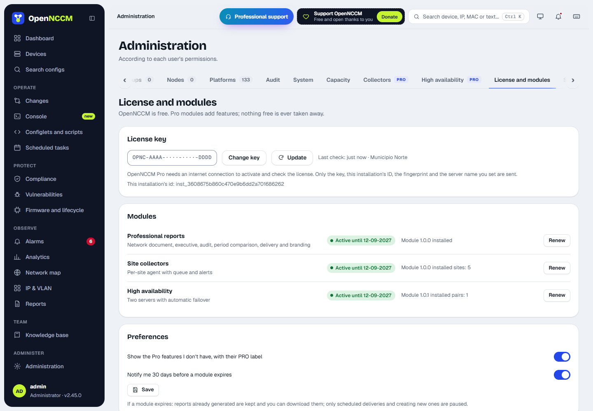
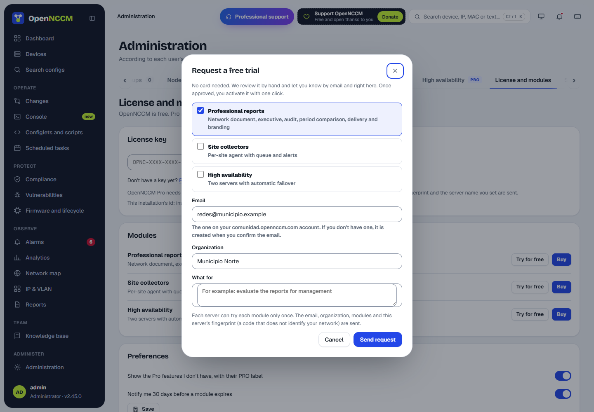
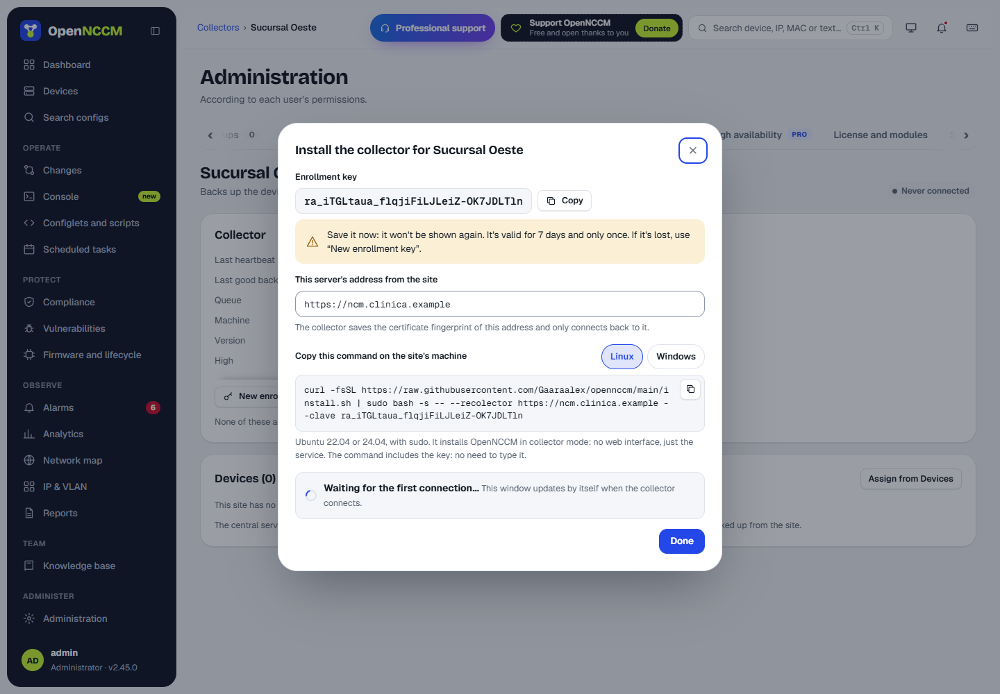
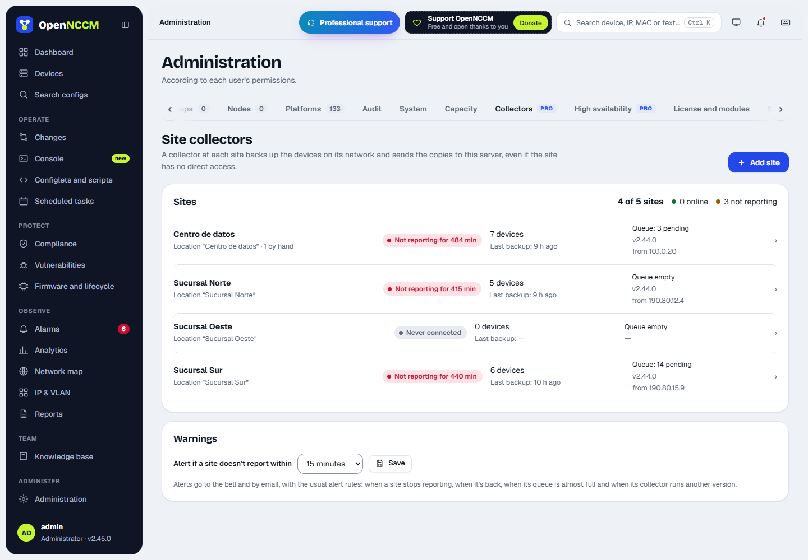
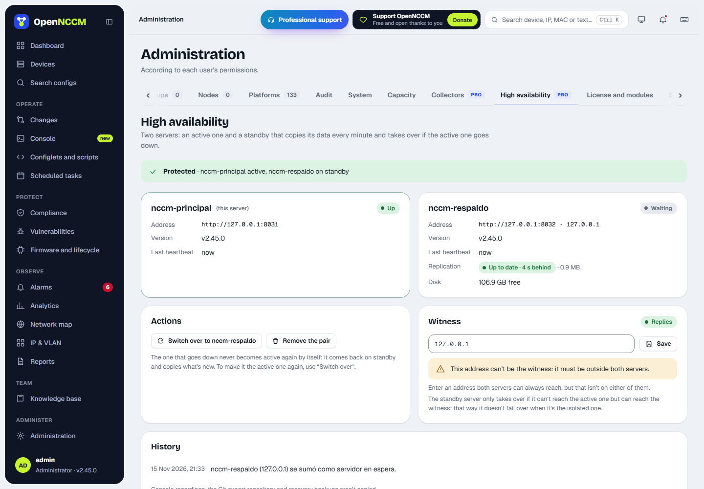
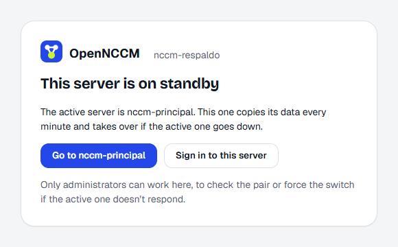
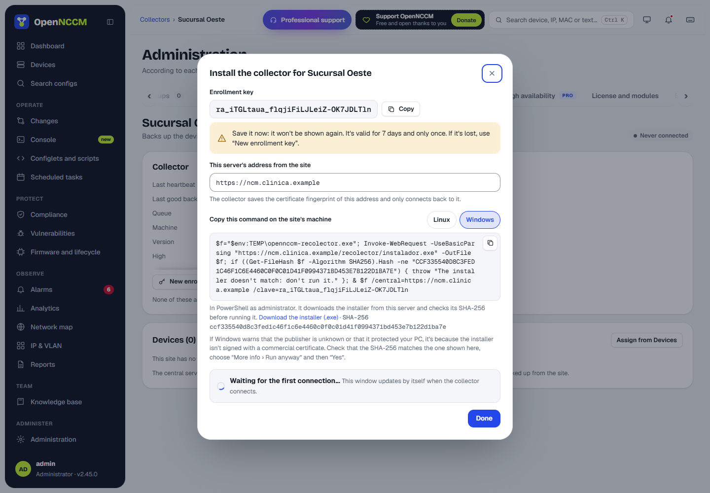
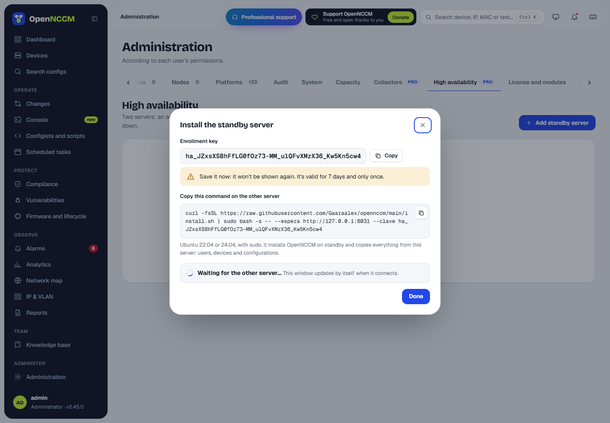

License and modules, free trial, Site collectors and High availability: what they do, how to install them and how to use them.
OpenNCCM is free and open source. OpenNCCM Pro is three optional paid modules for those who need them: Professional reports, Site collectors and High availability. Everything else stays the same, with no limits on devices or time, except the Network document, which moves to Professional reports (documents you already generated can still be viewed and downloaded in Reports › My documents). Plans and prices: comunidad.opennccm.com/pro.
This manual covers the Pro modules. The rest of OpenNCCM is described in the Spanish Manual de funciones and Guía de instalación; the application itself is fully available in English (My account › Language).
Everything is managed in Administration › License and modules (administrators only). The page shows the three modules with their state and, if the license includes them, until when they're active and their limits (devices, sites or pairs).

Activate: enter the key you got from comunidad.opennccm.com (format OPNC-XXXX-XXXX-XXXX-XXXX) and click
Activate. OpenNCCM requests the license signed for this server, stores it and downloads the modules it includes. The key is
stored encrypted.
Everything installs itself: as soon as the license is valid (when you activate the key or a trial, or renew), the modules it includes are downloaded, installed and working right away, without a restart. New versions of a module are also downloaded on their own, once a day or when you click Refresh. If the module is in use, the new version applies when the service restarts: on its own, with the next OpenNCCM update or right away with Restart now on this page.
Internet is required. On activation and once a day, the server checks the license with comunidad.opennccm.com. Only the key, this installation's ID, the fingerprint and the server name are sent (the fingerprint is a code that doesn't identify your network); never configurations or device data. If the server can't check it for more than 7 days, the modules are paused until the connection is back. Nothing is deleted.
"This license needs to be activated again on this server": it appears if this server is missing the data that identifies it to comunidad.opennccm.com (for example, after restoring an old database). The modules are paused until you click Activate here, which activates the same key again on this server. Nothing is deleted.
When a module expires:
Moving to another server or releasing an installation: each license is tied to one installation (a High availability pair counts as two, see below). To use it on another server, release the previous installation in My account at comunidad.opennccm.com and activate the key on the new server. If the license is used on a copy of the same server, the website detects it and pauses the modules on the copy. The page explains what to do.
Change key replaces this server's key with another one (for example, when moving from a trial to a purchase). Refresh fetches the newest license right away, without waiting for the daily check.
In License and modules, Try for free requests a trial of one or more modules. You enter your email, your organization and what you want it for. Each server can try each module only once. The request is reviewed by hand at comunidad.opennccm.com: meanwhile the page says “Trial request under review”, and the result arrives by email and on the same page. When it's approved, Activate trial activates it with one click. If the server already has a key, the trial is added to that license.

For sites whose devices the server can't reach (another network, a branch behind its own internet connection). A collector installed at the site backs up the devices on its network with the same code as the server and sends the copies to the central server, which stores them just like its own backups: versions, comparison, compliance, alerts. The connection is always opened by the site, over HTTPS: no port needs to be opened at the site.
Adding a site: Administration › Collectors › Add site. Choose which devices it backs up:
Once it's created, the enrollment key is shown (only once; valid for 7 days and a single use) together with the command to install the collector on Linux or Windows (see chapter 6). In This server's address from the site, enter the address the site uses to reach the server: the command is built with it, and an amber warning says if it's http, localhost or a private IP that may not be reachable. The collector saves the certificate fingerprint of that address and only connects back to it. The window turns to “Connected” by itself when the collector enrolls.


State of each site: Online, Not reporting (amber; red at 4 times the limit), Never connected, Paused or Revoked. The alert limit is set in Alerts (5 to 60 minutes). Alerts go to the bell and by email: when a site stops reporting and when it's back, when its queue is almost full and when its collector runs another version. Sites not reporting also count in the Dashboard's “things that need your attention”.
If the link to the site goes down, nothing is lost: the collector keeps what it reads for up to 30 days or 2 GB and sends it when the connection is back.
What isn't done from the central server for a device at a site (because it can't reach it): console, sending commands and configlets, firmware and automatic rollback. The device page says so. It's backed up from the site.
Pause, revoke and remove: on the site's page. Pause stops requesting backups. Revoke invalidates the collector immediately: it stops and never connects again. Remove site (typing its name) gives its devices back to the central server. None of these actions deletes backups. New enrollment key is used to reinstall the collector.
With High availability, collectors receive both addresses of the pair and always talk to the active server.
Two servers: an active one, which backs up, receives syslog, runs the scheduled tasks and serves the web, and a standby one, which copies the active server's data every minute and takes over if the active one goes down. It works with the default database (SQLite) and with PostgreSQL; both servers must use the same one.

Setting up the pair: on the active server, Administration › High availability › Add standby server. The enrollment key (shown only once, 7 days) and the command to install the second server are shown (see chapter 6). The second server must be a fresh Ubuntu 22.04 or 24.04 install. When it installs, it copies everything from the active server (users, devices, configurations) and activates its own license with the same key: a pair counts as two installations of that license. The active server registers it at comunidad.opennccm.com as its pair; if that registration fails, the page says so and offers Retry.
When it connects, the enrollment window shows the standby server's IP to copy: add it to your devices' access lists. If a device only accepts SSH from the active server's IP, the other one won't be able to back it up when its turn comes.
The page shows both servers with their role, version, last heartbeat, replication (“Up to date · 38 s behind”) and free disk, and a strip: Protected, Unprotected (the other one isn't responding), Failed over (until someone clicks Reviewed in the history) or Isolated. The same shows up on the Dashboard.
Witness: an address both servers can always reach, but that isn't on either of them (by default, the default gateway). The standby server only takes over if it can't reach the active one but can reach the witness: that way it doesn't fail over when it's the isolated one. If 127.0.0.1, localhost or one of the two servers' addresses is entered, the page warns that it can't be the witness.
Automatic failover: if the active server stops responding for 90 seconds and the witness responds, the standby server becomes active, notifies the bell and by email, and stays “Failed over” until it's reviewed. It requires a valid license: without it only automatic failover is turned off; replication and manual switchover keep working.
Manual switchover: Switch over to … (master administrator only, typing the other server's name). The active server stops backing up, the other one copies the latest data and takes over. Nothing is lost.
Force: if the active server isn't responding and the standby server didn't take over by itself (for example, because it can't reach the witness), a master administrator can sign in to the standby server and use Force on …, typing its name and ticking that they understand up to 60 seconds of changes may be lost.
Coming back is manual: the server that goes down never becomes active again by itself. When it comes back, it sees the other one took over, stays on standby and copies what's new. To make it the active one again, use Switch over whenever it suits you.
The standby server doesn't serve the normal web: whoever goes to it sees “This server is on standby” with a link to the active one. Administrators can sign in to High availability to check the pair or force the switch.

When becoming active (optional): to move a virtual IP or another action, create on each server, as root, the file
/etc/opennccm/al-pasar-a-activo.sh. It must be owned by root and no one else can modify it. It runs as root when that
server becomes active. For security it isn't written from the web.
What isn't copied: console recordings, the Git export repository and recovery backups. Each server also has its own license.
Remove the pair (typing the other server's name): this server stays alone and active and deregisters the pair at comunidad.opennccm.com, so the other server loses the modules at its next check. No data is deleted.
In both cases, the full command, with the address and the enrollment key, is given by the main server: nothing has to be typed by hand.
On the main server, Administration › Collectors › Add site. The window shows the enrollment key (valid for 7 days and a single use) and the command. On the site's machine (Ubuntu 22.04 or 24.04, with sudo) paste it:
curl -fsSL https://raw.githubusercontent.com/Gaaraalex/opennccm/main/install.sh | sudo bash -s -- \ --recolector https://MAIN-SERVER --clave ra_…
It installs OpenNCCM in collector mode: no web interface, no nginx and no open ports, just the service. Before starting, it downloads the signed module from the main server, checks the signature, saves the certificate fingerprint of that address (it only connects back to it) and enrolls. The main server's window turns to “Connected” by itself.
sudo opennccm recolector estado: its site, the main server and the queue of what's left to send.opennccm status says it's a collector; sudo opennccm update updates it like any OpenNCCM.sudo opennccm recolector alta URL KEY, or run the install
command again (data is kept).In the same window, the Windows tab shows the PowerShell command. Run it as administrator on the site's machine (tested on Windows 11 and Windows Server 2022):
$f="$env:TEMP\opennccm-recolector.exe"; Invoke-WebRequest -UseBasicParsing "https://MAIN-SERVER/recolector/instalador.exe" -OutFile $f;
if ((Get-FileHash $f -Algorithm SHA256).Hash -ne "SHA-256 SHOWN IN THE WINDOW") { throw "The installer doesn't match: don't run it." };
& $f /central=https://MAIN-SERVER /clave=ra_…

The command downloads the installer from the main server and checks its SHA-256 before running it: if it doesn't match the
one shown in the window, it stops. The installer (opennccm-recolector.exe) is published with each OpenNCCM version and
the main server downloads it by itself.
Windows warning: the installer isn't signed with a commercial certificate, so Windows may warn that the publisher is unknown or that “Windows protected your PC”. Check that the SHA-256 matches the one in the window, choose More info › Run anyway and then Yes.
It's installed in C:\Program Files\OpenNCCM Recolector, with its data in
C:\ProgramData\OpenNCCM Recolector (SYSTEM and Administrators only). It runs as the scheduled task OpenNCCM
Recolector, as SYSTEM: it starts with Windows and, if the process stops, it starts again within a minute.
"C:\Program Files\OpenNCCM Recolector\opennccm-recolector.exe" estado: its site and the queue.opennccm-recolector.exe desinstalar removes the task and the program; with /todo it also deletes the
data.On the main server, Administration › High availability › Add standby server. In This server's address from the other one, enter the address the second server uses to reach the main one. The window shows the enrollment key and the command. On a fresh Ubuntu 22.04 or 24.04:
curl -fsSL https://raw.githubusercontent.com/Gaaraalex/opennccm/main/install.sh | sudo bash -s -- \ --espera https://MAIN-SERVER --clave ha_…

It installs the full OpenNCCM, with its web and HTTPS, but doesn't create an administrator: before starting, it copies everything
from the main server (users, devices, configurations and the encryption key), activates its own license with the same key and
stays on standby. If the main server uses PostgreSQL, install it with --db postgresql too. Sign in with the main
server's passwords.
/etc/opennccm/al-pasar-a-activo.sh (owned by root, not writable by others) runs as root when that
server becomes active, for example to move a virtual IP. Create it on both servers.sudo opennccm update updates each server as usual. The page warns if the two end up on different
versions.